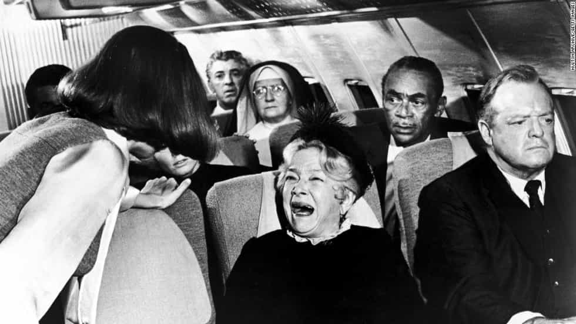
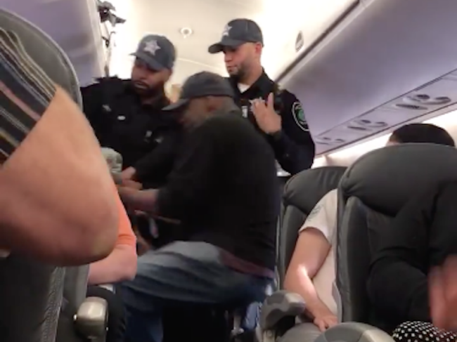

< < < Back
The Doctor Who Was Dragged Off The United Airlines Flight Reacted In The Worst Way Possible – Return Of Kings
It’s very close to Easter and it seems that America needs a Christ-like martyr. He came this week in the form of a doctor “dragged” off a United Airlines flight before it departed Chicago for Louisville, Kentucky. In classic US airline style, the flight had been overbooked and United sought four volunteers to vacate their seats in favor of extra staff members. When these could not be found, the man and three others were asked to leave.
What ensued in the cabin was a complete farce. The Asian man claimed he was a doctor and that he needed to be at work the following morning. Whilst I would sympathize with him if he didn’t have the past I will describe below, airlines can legally coerce randomly-selected passengers to leave overbooked planes. Before this happens, they typically try offering flight vouchers, hotel stays, and cold hard cash to secure volunteers. Even if through some technicality they did not have such a right this time, the man resisting Chicago Department of Aviation security officers was an incredibly dumb decision:
When the man refused to get up and walk off the plane, the officers intervened and pulled him from his seat. He had no intention of complying and positioned his body in such a way that he ended up bloodied, before being dragged off the plane. Bizarrely, he returned and started clinging to the cabin, asking if someone would “kill” him. The public reaction, as far as I can tell, has been overwhelmingly negative and vehemently against United Airlines and law enforcement. Yet more attention should be paid to the man’s choice to go limp, exactly the sort of behavior that leads to physical pain.
The reasons behind his erratic behavior onboard also need to be explored. It turns out the man, David Dao, is a previously disbarred medical practitioner who nearly went to jail for giving prescription drugs to a man in return for gay sex. Some have suggested he is now only allowed to practice medicine sparingly, perhaps indicating why he was so desperate to stay in the cabin. It is hard to feel sympathy for a man who has acted like this during his professional history and then complains that a probably perfectly legal decision to remove him is “unfair.” Had he not traded prescription drugs for sex and gotten into such disrepute, in all likelihood the ejection from the plane would have affected him minimally. I also question his state of mind and whether the level of inconvenience alleged is real.
Whatever your opinion on United’s (or the authorities’) handling of the matter, this man represents yet another person who decides to place themselves at a risk of injury and then complains when the likely or inevitable injury follows. Any grievance he had with the airline or the powers that be should have been followed up once he exited the plane. If an instruction you receive is unfair but apparently legal, deliberately injuring yourself by refusing to comply is immature and unnecessary.
A good way to illustrate the avoidable nature of this saga is by comparing it to scenarios where a passenger, whilst feeling a decision is unfair, respects it anyway. This anti-Trump woman may have behaved appallingly, but, to her credit, at least she eventually complied with both the airline staff and police and left the plane:
If everyone behaved like this when they didn’t get their way on planes or at airports, the police and security would be occupied 24/7

Planes, airports, and airlines often cause massive inconveniences. I’ve been diverted to different continents or been burned by hot drinks, missing important meetings, assessment dates, and other deadlines (or having an area perilously close to my genitals seething with pain for hours). Time and again I have observed people overreacting to their own situations, including to the point of, like the man in the United video, inflicting injury on themselves by resisting officials. I may have been angry in my own circumstances, but never have I felt the desire to disobey legal commands from those who can enforce them or get others to.
There is no doubt that overbooking is a much more common phenomenon in the United States than Europe or Australia. I am far from a fan of any American airline and most of the time will simply refuse to fly with them. But the contracts through which airline tickets are bought explicitly give airlines the right to bump customers from flights. And again, even if the right to eject passengers from overbooked flights does not exist here, physical resistance only aggravates the circumstances.
For the sake of good customer relations and common courtesy, I agree that United should have bumped passengers before boarding took place. Nonetheless, this does not condone the man’s resistance and the rather juvenile (mentally ill?) way he returned to the cabin. No airline in their right mind would allow a man saying “please kill me” to remain on an aircraft waiting to depart.
Some of the law enforcement taking him off were black and Hispanic

Allegations of “racism” have attached themselves to this airline incident. But from what I saw in the video, some security officers were black or Hispanic, indicating if any racism existed it would be minority-on-minority. With 30% of Americans being minorities, and an even higher percentage of tourists flying to and within America being minorities, the chances of a non-white being randomly bumped off a flight are probably around three or four in ten. If an Asian man being asked to leave an overbooked plane is the litmus test for racism, with zero evidence proffered that race was actually a factor, I have great concerns for how people will deal with such events in the future.
Another part of the problem is that the actions of police and security officers are viewed as “illegitimate” and “oppressive” far too often, encouraged by a biased media that takes one snippet of video from something like a police shooting and then generalizes an accusation across all manner of other unrelated incidents that take place later. When people refuse to follow instructions and physically resist, they and others see the case as one of martyrdom. “It’s unfair, I don’t like it, so I will not obey” is the mantra of many a person who could prevent their own victimization simply by backing off, complying, and seeking legal remedies through the appropriate channels afterwards.
Why didn’t other people—non-doctors—volunteer to leave?
If we assume that the reports of the man being a doctor who needed to perform surgery are true, why didn’t someone else volunteer to leave? People gladly whipped out their phones to record the spectacle and then virtue-signal online, but none seemingly had the foresight to realize that their own non-essential business could wait when United were calling for volunteers.
In addition to the man’s antics, his fellow passengers were not selfless enough to get out of their seats but suddenly became Good Samaritans when the chance to visually record things and speak to newspapers presented itself. I may believe that airline overbooking should be made illegal, but deciding to get yourself injured over it is nothing short of moronic.
Read More: Why Airlines Will Join The War On Fatties